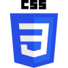
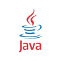
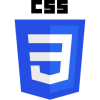
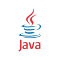

Soy,
Alejandro Sánchez
Soy un programador con experiencia en desarrollo front-end y back-end. En el front-end, me especializo en
la creación de interfaces de usuario interactivas y accesibles, utilizando tecnologías como HTML, CSS y
JavaScript. Me enfoco en construir aplicaciones dinámicas y escalables que proporcionen una experiencia de
usuario fluida en todos los dispositivos.
En el back-end, tengo experiencia con lenguajes como Java y PHP, y manejo bases de datos como MySQL. Me
enfoco en diseñar APIs eficientes, gestionar bases de datos, y optimizar el rendimiento y la seguridad de
las aplicaciones. Mi objetivo es crear soluciones web completas e integradas que cumplan con los más altos
estándares de calidad.
Me apasiona seguir aprendiendo nuevas tecnologías y mejores prácticas, buscando siempre mejorar la calidad
del código y la eficiencia de los proyectos.
Herramientas que utilizo
 


